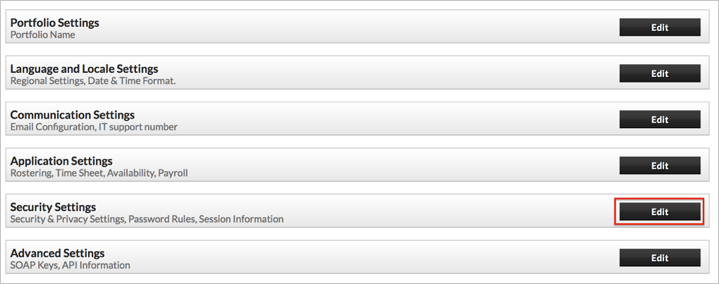
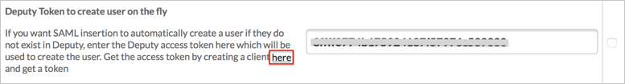
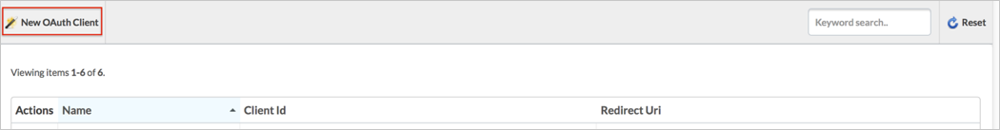
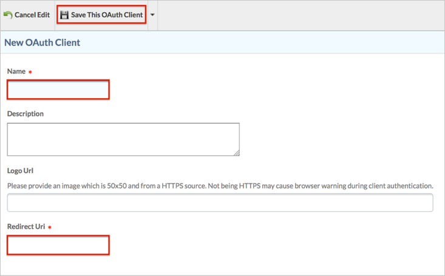
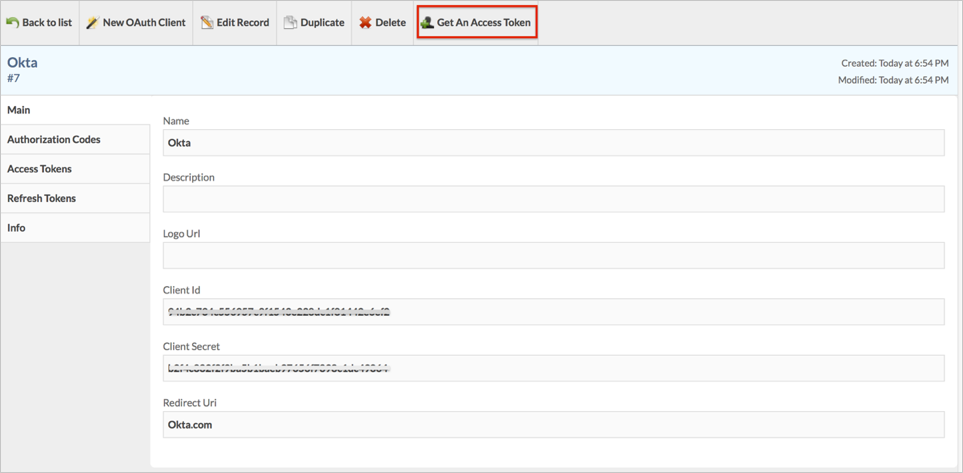
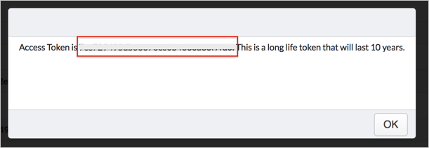
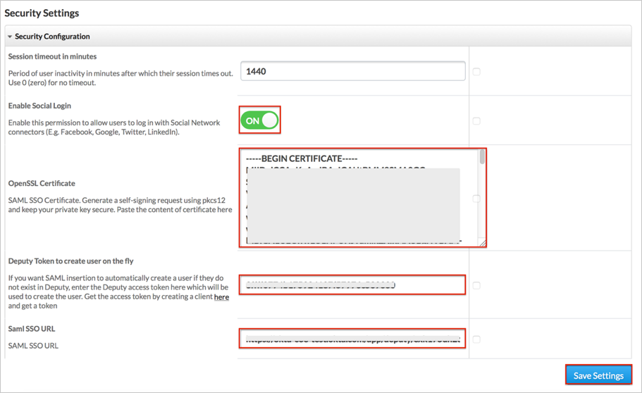

Login to your Deputy account as an administrator.
Go to https://[yourSubDomain].deputy.com/exec/config/system_config.
Navigate to Security Settings, then click Edit:

The Security Settings page appears. See screen shot at end of instructions for reference.
For Enable Social Login, select ON.
OpenSSL Certificate: Copy and paste the following certificate (PEM text format):
Sign into the Okta Admin Dashboard to generate this variable.
Deputy Token to create user on the fly. This is optional and is required for Just In Time (JIT) provisioning.
To get the Access Token:
Click the here link, or go to https://[yourSubDomain].deputy.com/exec/devapp/oauth_clients:

Click New OAuth Client:

Enter the following:
Name: Enter Okta.
Redirect Uri: Enter okta.com.
Click Save This OAuth Client.

Click Get An Access Token:

Copy your Access Token from the popup message:

Enter your Access Token on the Security Settings page.
Click Save Settings:

Done!
Notes:
IdP-initiated flows and Just in Time (JIT) provisioning are supported.
SP-initiated flows are not supported.